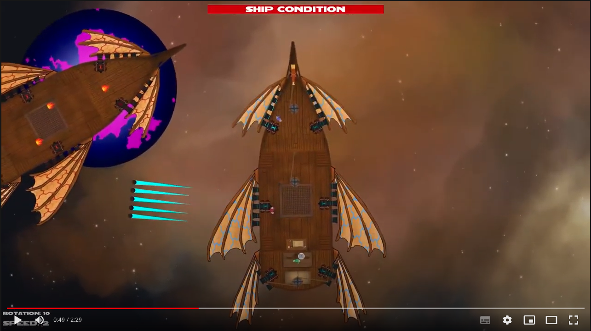

On this site, you con find various things i thoght my be intresting to share!
On the blog i will post small post about, really any thing i find intresting at the moment.
The portfolio and CV will display the cool things im doing at the moment, or have done in the past.
A little more about me
Everything in my life seem to circle around tree main passions, Technology, nature and people.
So far in my proffitional life, the people have held the main spotligt.
First combined with technology, where I was a certified event coordinator, ran a small department hosting a multitude of events centred around teaching game development.
Then combined with nature, where I was a professional ski instructor at Sun Peaks, Canada BC, both thought skiing and hosted and executes weekly events on the mountain.
Now my focus has shifted to technology, where I'm currently enrolled as a software engineering student at Aarhus University
Contact
email: web@mbirk.dk
Sorry, i dont rally have any social media...
Behind the website
This website is a single HTML file and ripped directly from John Doe's website.
(be gentle, they said it was ok).
This is my first real step into website and webdevolopment. So as of now, most credit goes to people who wrote and distributed john-doe's website
GIT, an intro!
I have volunteered to create a small git work shop for my semester.
Here is the matiral for that!
This post makes the first iteration of my first website! Really existing stuff.
Not that the technology I have used is very interesting, as the front page stated.
The website is a single HTML file, with a little CSS, that I did not write.
But I'm exited that I now have a place to share things I create and achieved!
The road stated with an Udemy Course, were completed the HTML part. Then half a year later, a random hacker news post
I sadly can't find the hacker news post any more…
Finally, paved the way for getting content on my domain, that has been sitting idle since probably 2017!
Again, thanks to John Doe's website for providing the framework for this site.
My first website!
This post makes the first iteration of my first website! Really existing stuff.
Not that the technology I have used is very interesting, as the front page stated.
The website is a single HTML file, with a little CSS, that I did not write.
But I'm exited that I now have a place to share things I create and achieved!
The road stated with an Udemy Course, were completed the HTML part. Then half a year later, a random hacker news post
I sadly can't find the hacker news post any more…
Finally, paved the way for getting content on my domain, that has been sitting idle since probably 2017!
Again, thanks to John Doe's website for providing the framework for this site.
Solar Sailors
I attended a high school called Game College that teaches Game Developing on top of the normal technical high school curriculum, though multiple projects each year.
Our graduation project was the game Solar Sailors, my primary responsibility was aligning the team with the process, and making sure we meet our requirements and deadlines.
The Project spanned 3 mounts, and the Team consists of 6 programmers, 3 artists and me as the primary producer.
The goal was to create a fun and engaging game where the players had to work together to win. 
Click the image and watch our MVP in action!
Portfolios of others from the project: Daniel HansenSebastian Hyberts
Combining my past in events, with my tech future at the tech hub ORBITLab Responsibilities ranging from trash-duty to teaching, promoting, hosting and supporting events, public speaking and much more.
I'm currently enrolled as a Software technology engineer student at the department of electronic and computer science at Aarhus University.
The goal of this education is to shape well round engineering that knows the in and outs of software,
on everything from micro-processers and embedded systems to web applications and distributed systems
2018 - 2019 : Vocational Training as an event Coordinator
As a part of my work for Viden Djurs, I trained as an event coordinator at IBC Kolding.
I completed the two-year program in one yea
2013 - 2016: technical high school
I attended High school at Game College, Viden Djurs. Game College is a boarding school, that on top of the technical high school curriculum teaches game development.
In various teams, I was involved in finishing 5 one and a half to three mounts long projects.
I would mostly work as a project coordinator and backup artist.
Involvement and volunteering
Aarhus University - representative for my year
Since my first semester at AU, I have been the representative for my year on the education Committee.
The education committee is responsible for ensuring that the education is as good as possible.
Here i provided direct feedback from the student perspective as well as providing fresh ideas on how to better our education
Sun Peaks resort: Guide, host and leader for starlight descent and fondue
I volunteered as a guide and host for the starlight descent and fondue at Sun Peaks resort and was later promoted to paid staff and coordinator and presented the event to the guest.
As a student, I cared deeply about my school. This caused me to involved with many aspects of the school
Tutor and coordinator of tutors From my first Semester, I volunteered as a tutor, guiding primary school students visiting our school.
From 3. Semester I was the primary student coordinator, responsible for requirements of tutors, shifts and activities.
Volunteer for marketing From my second semester, I attended a between 1 and 4 of education exhibitions per semester as a part of the marketing team
This eventually lead to my job as an event coordinator after I graduated
Student Board
I was my class representative on the student board
This page is not referenced in the menu, for example.
This setup
It might get unpractical for more than a handful of pages, but it comes in handy if all you need is a simple website.
is databaseless, javascriptless, and buildshit-free, so you can edit your website with a text editor and upload it somewhere
This page is hosted for free at Neocities, where you can use their somewhat clunky online code editor to update your site. Github Pages would be another option, here is a repository to start with.
like a normal person.
 Again, thanks to John Doe's website for providing the framework for this site.
Again, thanks to John Doe's website for providing the framework for this site.